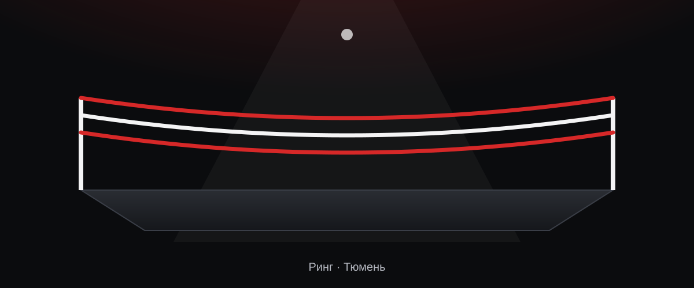

Благотворительный фонд
Благотворительный фонд развития «Статус-бокс» (БФР «Статус-бокс») собирает средства, чтобы бокс в Тюмени и Тюменской области развивался и держался. Зарегистрирован 17 февраля 2026 года.
Открой направление, чтобы узнать подробности.
Каждый взнос помогает: бокс в Тюмени и области остаётся доступным.
Разовый или регулярный взнос на развитие бокса.

Отсканируй QR-код. В назначении платежа укажи: «Пожертвование в рамках уставных целей».
Бизнес может поддержать фонд, вечер или конкретное направление.
Условия партнёрства: [ЗАПОЛНИТЬ]
Написатьпожертвований в денежной форме тратится на благотворительные цели в течение года.
расходов за год — не больше, чем на оплату труда управленцев.
прибыли не делится между учредителями.
Формулировки взяты из устава фонда (п. 12 и п. 15). Перед публикацией проверяется юристом.
По уставу фонд ежегодно представляет отчёт о своей деятельности в орган, который зарегистрировал фонд. Годовой отчёт и бухгалтерскую отчётность утверждает Совет фонда.
Публикация отчётов на сайте: [ЗАПОЛНИТЬ: решение Совета фонда]. Ссылка на годовой отчёт: [ЗАПОЛНИТЬ].
Единоличный руководитель, срок 5 лет.
Имя: [ЗАПОЛНИТЬ]
3 члена, срок 5 лет, без вознаграждения.
Состав: [ЗАПОЛНИТЬ]
Надзор за работой фонда, не менее 3 человек.
Состав: [ЗАПОЛНИТЬ]
Устав утверждён протоколом № 2 Совета фонда от 07.10.2026. Устав в новой редакции находится на рассмотрении в Министерстве юстиции.
Президент фонда: [ЗАПОЛНИТЬ: имя]. Состав органов — в разделе «Управление».